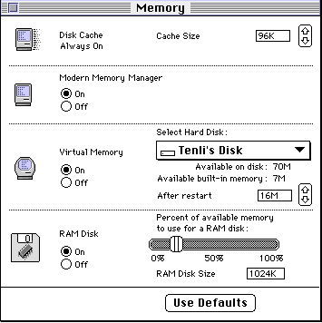

Legacy Document
Important: The information in this document is obsolete and should not be used for new development.
Important: The information in this document is obsolete and should not be used for new development.


Compatibility and Performance
In general, it's relatively easy to modify existing ANSI-compliant C or C++ source code that successfully compiles and runs on 680x0-based Macintosh computers so that it can be compiled and run on PowerPC processor-based Macintosh computers. Most of the intricate work required to make your application compatible with the new PowerPC run-time environment is performed automatically by your development system's compiler and linker and by the Code Fragment Manager. As you've seen, the changes you need to make in your application's source code are fairly straightforward. You need to make these changes:
This section discusses several additional topics that relate more generally to the compatibility and performance of your PowerPC application.
- Create routine descriptors for any routines whose addresses you pass to code of an unknown type.
- Minimize any dependencies on system global variables by using the new set of accessor routines defined in the MPW interface files.
- Isolate and conditionalize any dependencies on specific features of the 680x0 A5 world or the 680x0 run-time environment.
- Isolate and conditionalize any dependencies on information being passed in specific 680x0 registers.
- Use 680x0 alignment for any data that is passed between environments, or declare your data structures so that their fields are aligned identically in both the 680x0 and PowerPC environments.
Patches
Some applications or other kinds of software patch the Operating System's trap dispatch tables to augment or replace the capabilities of certain system software routines. In general, however, there is much less need to patch the system software now than there previously was, and you should avoid doing so if at all possible. One very good reason to avoid unnecessary patching is that you can incur a substantial performance reduction if your patch causes a mode switch. For example, when a PowerPC application calls
a system software routine that is implemented as PowerPC code, the dispatching to
the PowerPC code occurs fairly quickly. However, if you patch the PowerPC code
with 680x0 code, the Mixed Mode Manager needs to intervene to switch the execution environments both when entering and when exiting your patch code. This switching results in a considerable overhead (approximately 15 microseconds on a 60 MHz PowerPC processor per round-trip mode switch, the equivalent of about fifty 680x0 instructions).
The same situation occurs if you use PowerPC code to patch a system software routine that is implemented as 680x0 code. Once again, a mode switch is required before entering your patch code and after exiting it.
- Note
- The precise number of instructions or microseconds of overhead required to switch from one environment to the other and back is subject to change in future system software versions and on different hardware configurations. The important point to keep in mind is that switching modes is a reasonably expensive activity and you should avoid it whenever possible.

The ideal solution is simply to avoid patching the system software entirely. In the few cases in which you absolutely cannot avoid patching some system software routine, you can avoid the kind of mode switching just described by making sure to patch PowerPC code with a PowerPC patch and 680x0 code with a 680x0 patch. Because you cannot in general know what kind of code implements a particular system software routine, you should install a fat patch, which addresses both PowerPC and 680x0 versions of your code. To install a fat patch, you need to create a routine descriptor with two embedded routine records, one record describing the PowerPC routine and one record describing the 680x0 routine. Then you pass the address of that routine descriptor--that is, a universal procedure pointer--to an appropriate Trap Manager routine, which installs that universal procedure pointer into the trap dispatch table. When the patched routine is called, the Mixed Mode Manager inspects the routine descriptor addressed by the universal procedure pointer and selects the patch code that has the smallest impact on performance.
Your patch code should, of course, make sure to call through to the code originally addressed by the entry in the trap dispatch table. You can retrieve that address by calling
- IMPORTANT
- To install patches, you can use one of the Trap Manager routines
SetToolTrapAddress,SetOSTrapAddress, andNSetTrapAddress. You should not use the obsolete routineSetTrapAddress. See the chapter "Trap Manager" in Inside Macintosh: Operating System Utilities for a more complete description of the recommended way to patch system software routines. You should never manipulate the trap dispatch tables directly.GetToolTrapAddress,GetOSTrapAddress, orNGetTrapAddressbefore you install
your patch. In the 680x0 patch code, you can simply jump to that address. In the PowerPC patch code, you execute the original code by calling the Mixed Mode Manager routineCallUniversalProc(for Toolbox traps) orCallOSTrapUniversalProc(for Operating System traps).The
CallOSTrapUniversalProcfunction behaves just like theCallUniversalProcfunction except that it preserves additional 680x0 registers around the execution of
the called procedure. In addition, you need to pass it a value specifying the trap word. Operating System traps expect a 2-byte parameter in register D1; this parameter represents the actual A-trap word used to call the routine. (Some traps use bits in the trap word to dispatch to different code.) Any Operating System trap patches you install should accept that parameter in register D1 and pass it through when calling the original trap code. Listing 1-14 shows how to patch theNewPtrfunction using PowerPC code.Listing 1-14 Patching an Operating System trap
enum { /*procedure information for NewPtr function*/ kNewPtrProcInfo = kRegisterBased | RESULT_SIZE(kFourByteCode) | REGISTER_RESULT_LOCATION(kRegisterA0) | REGISTER_ROUTINE_PARAMETER(1, kRegisterD1, kTwoByteCode) | REGISTER_ROUTINE_PARAMETER(2, kRegisterD0, kFourByteCode) }; pascal Ptr MyNewPtrPatch(unsigned short trapWord, Size byteCount) { /*Your patch code goes here.*/ return (long) CallOSTrapUniversalProc(gOriginalNewPtr, kNewPtrProcInfo, trapWord, byteCount); }BecauseCallUniversalProcandCallOSTrapUniversalProcare called as subroutines and return control to the calling code, all PowerPC patches are both
head patches and tail patches (that is, your patch has control both before and after
the code originally pointed to by the trap dispatch table).Notice that the address you call through to might be the address of someone else's patch. As a result, it's still possible for mode switches to occur, if at least one link in the patch daisy chain is not a fat patch. These mode switches are unavoidable.
Note also that the system software includes a small number of split traps, system software routines that are implemented with 680x0 code (usually in ROM) and as PowerPC code in an import library. Because the PowerPC code is contained directly
in the import library, you cannot patch the PowerPC portion of a split trap. In general, however, only those routines are implemented as split traps that are not likely candi-
dates for patching. For example, a number of very small utility routines likeAddPtandSetRectare implemented as split traps.The biggest restriction on patching is that you cannot patch any selector-based traps (system software routines that are dispatched through a selector code) with either pure PowerPC or fat patches. In the 680x0 environment, you can patch one or more selectors belonging to a dispatched trap and pass all others through to the original code. In the PowerPC environment, however, this is not possible. As a result, when patching with PowerPC code, you must patch all the routines selected by a single trap if you patch any of them. However, you cannot in general determine how many selectors are supported by a given selector-based trap. You cannot therefore safely patch selector-based traps in a way that is likely to remain compatible with future system software versions. For now, you should use 680x0 code if you need to patch selector-based traps.
The Memory Manager
As you've already learned, the Memory Manager has been rewritten for PowerPC processor-based Macintosh computers. The new Memory Manager, written in C and compiled into native PowerPC code, offers much better performance than the previous 680x0 assembly-language version, both because it runs in the native PowerPC environ-
ment and because it uses substantially improved algorithms to manage heaps. In general, however, the application programming interface has not changed. As a result, you'll benefit from the new version completely transparently, whether your application runs under the 68LC040 Emulator or in the native PowerPC environment.The Memory control panel (shown in Figure 1-17) includes controls that allow the user to select whether applications and other software use the new Memory Manager or the original Memory Manager. By default, the new (or "Modern") Memory Manager is used.
Figure 1-17 The Memory control panel for PowerPC processor-based Macintosh computers
 There are, however, several restrictions imposed by the new Memory Manager that might cause compatibility problems for your application. If you've followed the advice and warnings in the book Inside Macintosh: Memory, your application should run without problems. However, the new Memory Manager is generally much less forgiving toward code that fails to heed those warnings. Here are some areas to watch out for.
To repeat, you shouldn't encounter any of these problems if you've used the routines and programming techniques documented in Inside Macintosh: Memory.
- Don't dispose of blocks more than once. When you dispose of a block, whether relocatable or nonrelocatable, the Memory Manager immediately takes control of that block. Any future attempt to operate on the block (even simply to dispose of it) is likely to cause problems. Note that it's possible to dispose of a block twice in rather subtle ways. For example, you might call
GetPictureto display a picture stored in a resource and then inadvertently callKillPictureorDisposeHandleto remove it. This way of disposing of the block of memory leaves the'PICT'resource in the resource map. When your application quits, the resource is disposed of once again. (The proper way to dispose of a picture loaded from a resource is to callReleaseResource.)- Don't manipulate the Memory Manager's private data structures, including block headers for both relocatable and nonrelocatable blocks, zone headers, and any unused master pointers. The sizes and formats of some of these structures have changed.
- Don't access any system global variables maintained by the Memory Manager. Whenever possible, use the documented application programming interface (such
as theSetApplLimitandSetGrowZoneprocedures) to avoid manipulating
those variables.- Don't modify free blocks of data or rely on the integrity of any data in free blocks. The new Memory Manager assumes control of all unallocated memory in your heap and may overwrite any information in free blocks.
- Don't close a resource file without first detaching any resources in that file that you want to continue using. To detach a resource, call the
DetachResourceprocedure.- Don't use fake handles or pointers. You should call Memory Manager routines
only on blocks that were created by the Memory Manager itself. Remember that
the Memory Manager is fundamentally a heap managing tool. You should not,
for example, callDisposePtron data in your stack or in your application global variable space.- Don't call Memory Manager routines at interrupt time. Except for the
BlockMoveprocedure, all Memory Manager routines either move memory or manipulate system global variables. These operations must not occur at interrupt time.- Make sure to flush the instruction cache whenever necessary. Because it's much harder to treat data as executable code in the PowerPC environment, the new Memory Manager flushes the instruction cache only when it moves blocks around in memory.
- Don't make assumptions about the relative positions of the stack and heap in your application partition. You should adjust the size of the stack, if necessary, by calling
GetApplLimitandSetApplLimit.
Performance Tuning
Once you've gotten your application or other software to execute correctly on a PowerPC processor-based Macintosh computer, you'll want to spend some time
tuning it for maximum performance. Many factors affect the speed at which code executes, including
The easiest way to increase the performance of your application is to use the compiler's optimization capabilities. It's not uncommon for compiler speed optimizations to improve your code's execution by as much as 50 percent. See the book Macintosh on PowerPC C Compiler for more information on compiler optimizations.
- how often you cause mode switches from one environment to another
- how you pass parameters to subroutines
- whether you use compiler-specific optimizations
This section provides some preliminary discussion of the overhead associated with mode switches and parameter passing. In general, you'll need to combine the informa-
tion presented here with empirical observations you obtain when using a performance-
measurement tool, such as the Adaptive Sampling Profiler (ASP) built into the debugger. See the book Macintosh Debugger Reference for complete information about using the ASP.Mode Switches
You've already learned (in "Patches" on page 1-66) that it's important to avoid mode switches whenever possible. The Mixed Mode Manager requires the equivalent of approximately fifty 680x0 instructions to switch from one environment to another.
As a result, you might want to minimize the number of times your code invokes a
mode switch.Some mode switches are entirely avoidable. For example, if you need to patch a system software routine, you can avoid at least some mode switching by installing a fat patch
(a patch that includes both 680x0 and PowerPC versions of the patching code). Similarly, if your application calls any resource-based code (for example, dynamically loadable filters), you can create fat resources: code resources that include both 680x0 and PowerPC versions of the executable code. Once again, the Mixed Mode Manager will select the code that minimizes mode switching.Some mode switches, however, are entirely unavoidable. Any time your PowerPC application calls a system software routine that has not yet been ported to use the native PowerPC instruction set, the Mixed Mode Manager must switch to the 680x0 environ-
ment to execute the routine and then switch back to the PowerPC environment to allow your application to continue. This sometimes means that parts of your application might execute more slowly on a PowerPC processor-based Macintosh computer than on a 680x0-based Macintosh computer.A good example of this behavior concerns calling Event Manager routines, which remain as 680x0 code in the first release of the system software for PowerPC processor-based Macintosh computers. Suppose that during a lengthy calculation your application calls
WaitNextEventorEventAvailto scan the event queue for a Command-period event (which typically indicates that the user wants to cancel the lengthy operation) and to give time to other applications. Each time you call the Event Manager, two mode switches occur (from your code to the emulated code and back). Moreover, because your code is native PowerPC code, it executes more quickly between Event Manager calls than it did in the 680x0 environment. The result is that your application is switching modes more often than it absolutely has to.Although you cannot avoid the mode switches entirely when calling the Event Manager, you can lessen the overall impact of those switches on your application's performance by doing more work between successive Event Manager calls. One simple way to do this is to perform more than one iteration of a loop between calls to
WaitNextEvent. Another simple way is to callWaitNextEventonly after a certain amount of time has elapsed. Listing 1-15 shows how you can rewrite a part of your main event loop to incorporate this feature.Listing 1-15 Waiting to call the
WaitNextEventfunction
static unsigned long gWNEDelay = 5; /*adjust this value as needed*/ void MainEventLoop(void) { EventRecord myEvent; unsigned long nextTimeToCheckForEvents = 0; while (!gDone) { if ((gWNEDelay == 0) || (TickCount() > nextTimeToCheckForEvents)) { nextTimeToCheckForEvents = TickCount() + gWNEDelay; if (WaitNextEvent(everyEvent, &myEvent, MyGetSleep(), (RgnHandle) nil)) HandleEvent(&myEvent); } DoIdle(); } }As you can see, this code continues in the event loop only when a certain amount of time has elapsed. This method of adjusting the frequency of calls to WaitNextEvent works on any available Macintosh computer and doesn't require any conditional compilation.Routine Parameters
You've already learned (in "Parameter Passing" beginning on page 1-47) that PowerPC compilers attempt to pass as many parameters as possible in the processor's registers, thereby minimizing the number of memory accesses that are required for a routine call. You can, however, help the compiler minimize memory accesses by following a few simple guidelines:
- Use function prototypes. A compiler can generate more efficient code if you include prototypes for any functions that accept floating-point parameters. The compiler then knows to use the floating-point registers to store those parameters. If no function prototype is available for a function taking floating-point parameters, the compiler needs to pass the same information in both general-purpose and floating-point parameters. (For more information, see the description of PowerPC calling conventions beginning on page 1-47.)
- Put floating-point parameters at the end of the parameter list. A PowerPC compiler reserves space for floating-point parameters not only in the floating-point registers but also either in the general-purpose registers or in a stack frame. (This is necessary to support passing floating-point parameters to a function for which no prototype
is available.) It's best to let any non-floating-point parameters use the available general-purpose register, so you should move floating-point parameters to the end of the routine's parameter list.- Minimize the use of variable parameter lists. For many reasons, it's inefficient to
use variable parameter lists in the PowerPC environment. Use them only when absolutely necessary.
- IMPORTANT
- These floating-point parameter-passing optimizations are highly dependent on specific features of the PowerPC run-time environment. You should implement these guidelines only in those parts of your code where maximum efficiency is necessary.